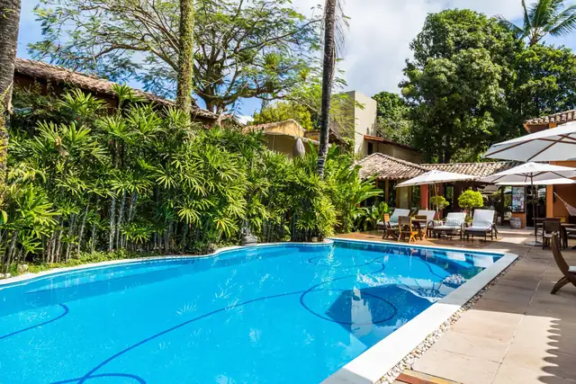
Piscina
Fica ao lado do restaurante e bar, no meio do verde, com música ambiente.
Das 7h30 às 22h30Hotel-pousada no Centro de Arraial · desde 1985
28 apartamentos com varanda e rede no meio do jardim, piscina, sauna, restaurante e bar. A 500 m da Praia do Mucugê, uns 10 minutos a pé.
WhatsApp (73) 98874-1373 · Recepção 24h
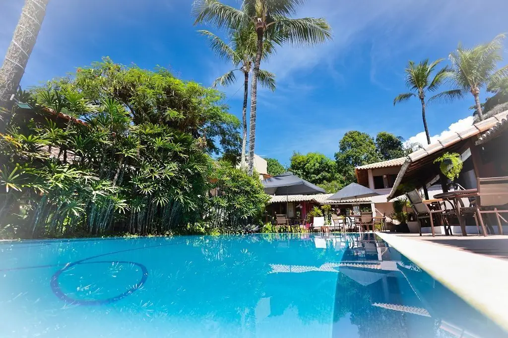
Desde 1985
Em 1985, quando Arraial d’Ajuda ainda era uma vila quase deserta, uma jovem apostou tudo o que tinha numa pousada pequena, de seis apartamentos.
A Coqueiros foi crescendo aos poucos. Hoje os apartamentos ficam espalhados pelo jardim, entre palmeiras, caminhos e um laguinho, e todos têm varanda com rede.
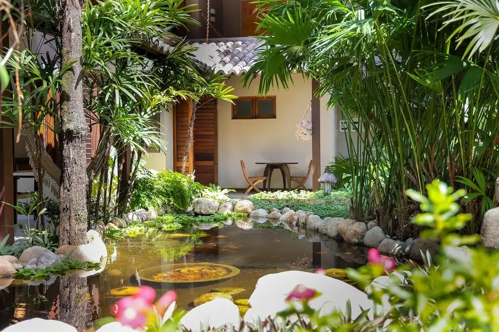
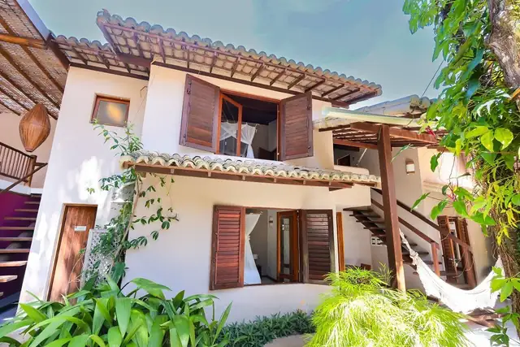
Apartamentos
Amplos e aconchegantes, com vista para o jardim ou para a piscina. Tem apartamento para 2, 3, 4 ou 5 pessoas.
Em todos os apartamentos
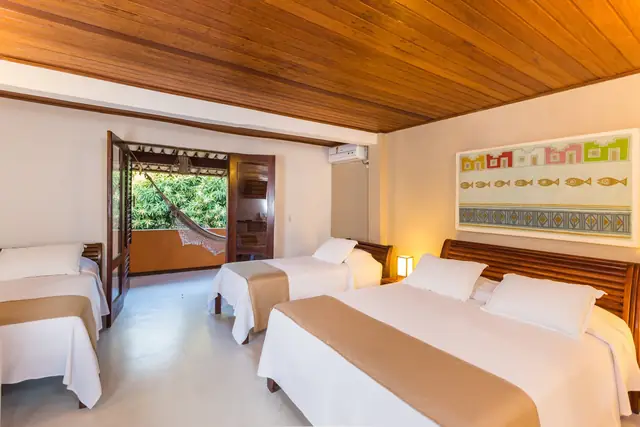
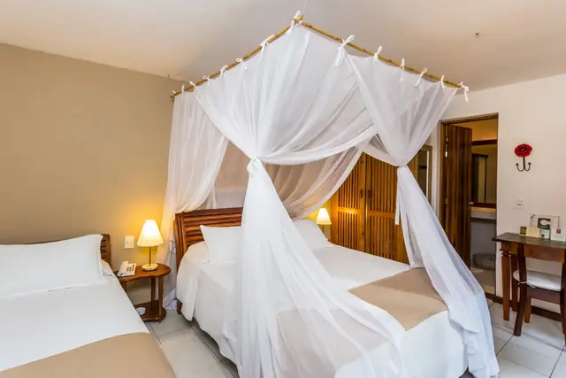
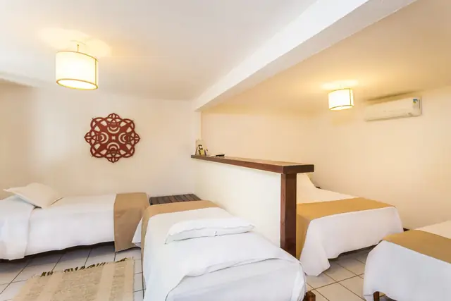
Arraste para o lado para ver mais fotos.
Estrutura
Para os dias de ficar pela pousada, sem pressa de ir a lugar nenhum.

Fica ao lado do restaurante e bar, no meio do verde, com música ambiente.
Das 7h30 às 22h30Ao lado da piscina, de uso livre para os hóspedes. É só pedir na recepção.
Das 7h30 às 22h30Lounge junto à recepção com Smart TV, TV por assinatura, revistas, livros e computador com internet.
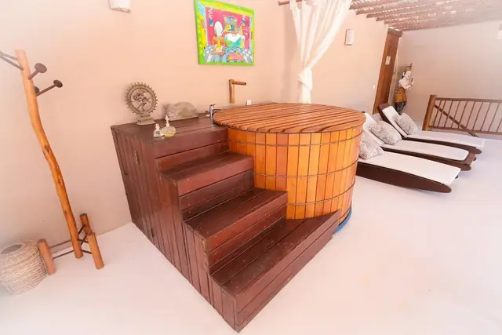
Yoga com instrutor às terças e quintas, às 18h, grátis para hóspedes. Sala de massagem com massoterapeutas e ofurô com hidromassagem.
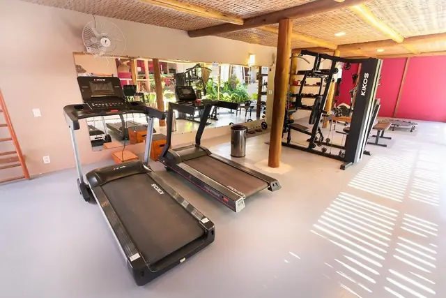
Espaço com equipamentos para alongar, correr, pedalar e fazer musculação sem perder o ritmo nas férias.
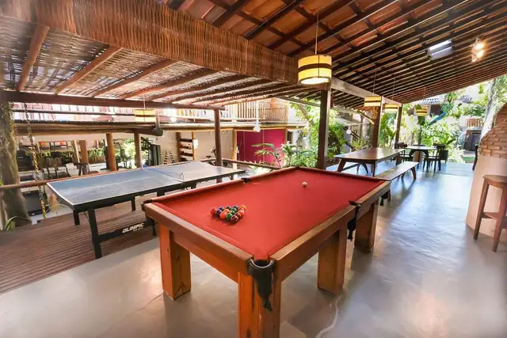
Sinuca e pingue-pongue para as partidas depois da praia.
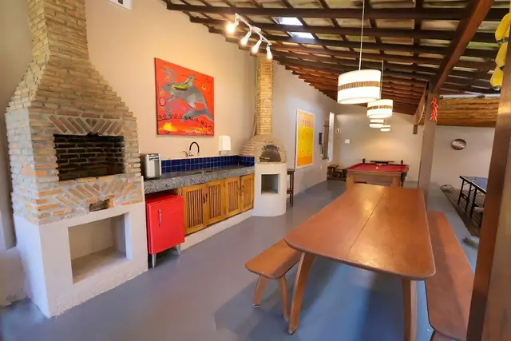
Um canto para reunir os amigos, a família ou os outros hóspedes.
Café e restaurante
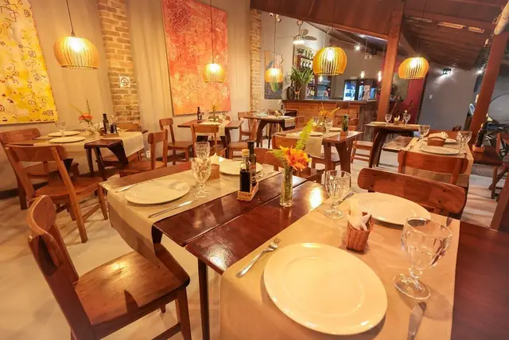
No TripAdvisor, o café da manhã é um dos pontos que os hóspedes mais elogiam, com destaque para as tapiocas e os omeletes.
Das 7h30 às 10hPratos típicos e da cozinha contemporânea, com ingredientes frescos e selecionados. No bar, drinks, bebidas variadas e uma carta de vinhos.
Os consumos podem ser pagos na hora ou no check-out, em dinheiro ou cartão.
Todos os dias, das 14h às 22h30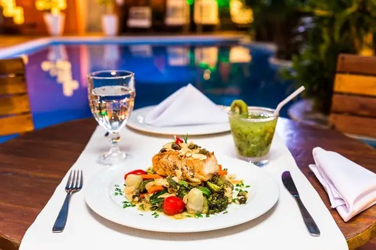
Fotos
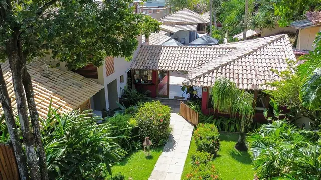
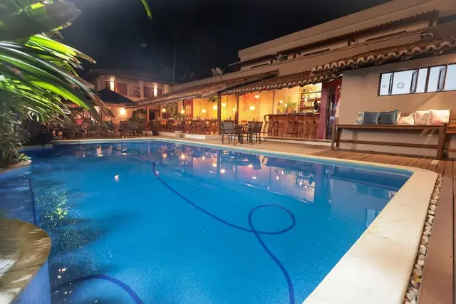
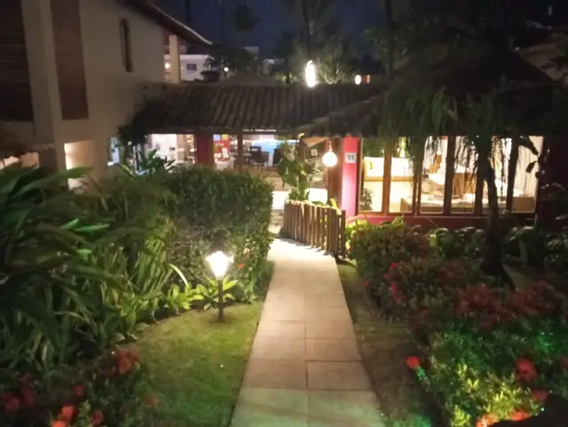
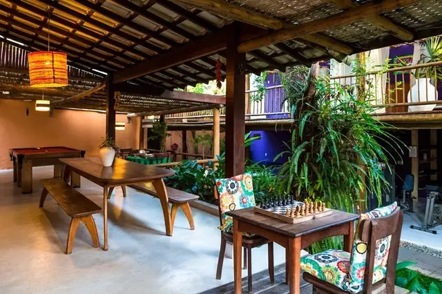
Arraste para o lado para ver mais fotos.
Avaliações
Resumo do que mais aparece nas avaliações do TripAdvisor.
Localização
Estacionamento gratuito para hóspedes.
Dúvida sobre o caminho? Chame a recepção no WhatsAppO mapa do Google só carrega se você pedir, para a página abrir mais rápido.
Contato e reservas
A recepção funciona 24 horas. Para reservas e dúvidas, chame no WhatsApp, ligue ou mande um e-mail.